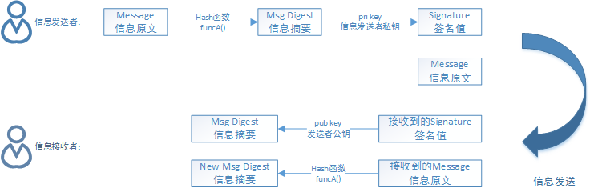
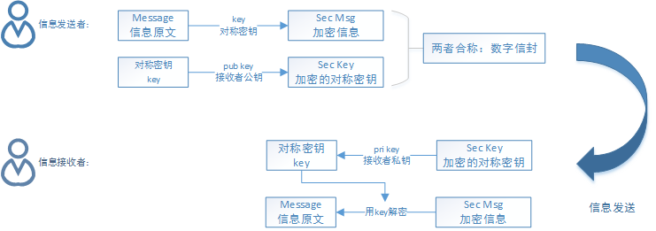

软件设计师教程在讲加密技术和认证技术的时候，提到了数字签名和数字加密，两者还是有区别的，以下对两者的主要过程做一个简单介绍。
对称加密采用了对称密码编码技术，特点是文件加密和解密使用的相同的密钥，在密码学中称为对称加密法。常用的对称加密算法有：数据加密标准算法(Digital Encryption Standart, DES)、三重DES、RC-5、国际数据加密算法(International Data Encryption Adleman, IDEA)、高级加密标准算法(Advanced Encryption Standard, AES)。
非对称加密算法需要两个密钥：公开密钥(Publickey) 和 私有密钥(Privatekey)。公开密钥与私有密钥是一对，如果用公开密钥对数据进行加密，只要用对应的私有密钥才能解密；如果用私有密钥对数据进行加密，那么只有用对应的公开密钥才能解密。
因为加密和解密使用的是两个不同的密钥，所以称为非对称加密算法。常用的非对称加密算法：RSA(Rivest, Shamir and Adleman)。
Hash(哈希)函数提供了这样一个计算过程：输入一个长度不固定的字符串，返回一串固定长度的字符串，又称Hash值。单向Hash函数用于产生信息摘要。
信息摘要简要地描述了一份较长的信息或文件，可以被看作一份长文件的“数字指纹”。信息摘要用于创建数字签名，对于特定的文件而言，信息摘要是唯一的。常用算法有：MD5算法。
数字签名主要经过以下几个过程
1. 信息发送者使用一个单向散列函数（Hash函数）对信息生成信息摘要
2. 信息发送者使用自己的私钥签名信息摘要
3. 信息发送者把信息本身和已签名的信息摘要一起发送出去
4. 信息接收者通过使用与信息发送者使用的同一个单向散列函数（Hash函数）对接收的信息本身生成新的信息摘要，再使用信息发送者的公钥对信息摘要进行验证，以确认信息发送者的身份和信息是否被修改过
过程图示如下：

数字加密主要经过以下几个过程
1. 当信息发送者需要发送信息时，首先生成一个对称密钥，用该对称密钥加密要发送的报文
2. 信息发送者用信息接收者的公钥加密上述对称密钥
3. 信息发送者将1、2步骤的结果结合在一起传给信息接收者，称为数字信封
4. 信息接收者使用自己的私钥解密被加密的对称密钥，在用此对称密钥解密被发送方加密的密文，得到真正的原文
过程图示如下：

数字签名使用的是发送方的密钥对，发送方用自己的私有密钥进行加密，接收方用发送方的公开密钥进行解密，这是一个一对多的关系，任何拥有发送方公开密钥的人都可以验证数字签名的正确性；数字加密则使用的是接收方的密钥对，这是多对一的关系，任何知道接收方公开密钥的人都可以向接收方发送加密信息，只有唯一拥有接收方私有密钥的人才能对信息解密。